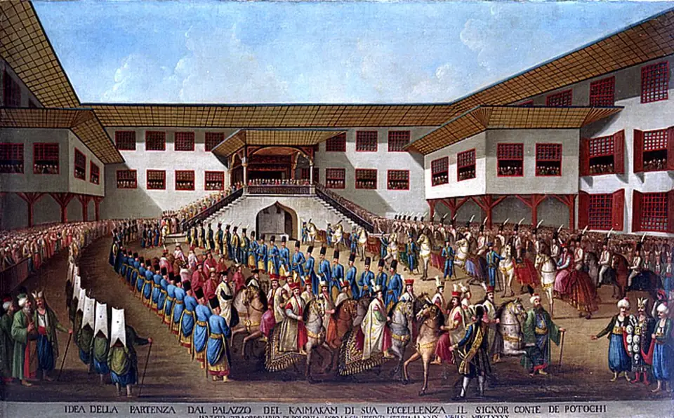

Elçiler ve Diplomasi
Eski Leh Sokağı (bugünkü Nur-i Ziya Sokağı)
İstiklal'e açılan bu sokağa uzun süre Leh Sokağı dendi; adı, XIX. yüzyılda Lehistan elçiliğinin İstanbul'da hiç kapanmadığı inancını canlı tuttu.


- Semt
- Beyoğlu
- Dönem
- 1788–1793 / 1877–1878
- Ziyaret
- Ziyarete açık
Hikâye
İstiklal'e açılan bu ara sokağa uzun süre Leh Sokağı dendi; XIX. yüzyıl boyunca Pera halkı burada bir Polonya elçiliği bulunduğuna inandı.
Eski Lehistan'ın İstanbul'da daimi bir elçiliği hiç olmadı; her elçi görevi süresince bir konak kiralardı. Sonuncusu Franciszek Piotr Potocki 1788-1793 arasında elçilik yaptı; tarihçi Hacer Topaktaş'a göre konağı büyük ihtimalle Beyoğlu'ndaydı. Heyetinin Pera'ya törenle girişini ressam Luigi Mayer resmetti; tablo bugün Varşova'daki Wilanów Sarayı'nda. Potocki'nin ayrılmasından iki yıl sonra Polonya haritadan silindi.
Sokağın adı ise taksimlerden sonra da yaşadı. Topaktaş'a göre XIX. yüzyılda Pera'da bir Polonya elçiliğinin çalışmayı sürdürdüğü algısını besleyen de bu addı; oysa o dönemde resmî bir Polonya temsilciliği yoktu. Şarkiyatçı Jan Reychman'ın aktardığına göre Kırım Savaşı sırasında Prens Czartoryski'nin Doğu Ajansı'nın yeri de pek çok kişi tarafından elçilik sanılmıştı. 1877-1878 Osmanlı-Rus Savaşı'nda Leh Sokağı üzerinde bir yerde, Osmanlı safında savaşmak isteyen Polonyalı gönüllülerin yazıldığı küçük bir büro çalıştı. Reşad Ekrem Koçu'nun İstanbul Ansiklopedisi arşivindeki 1898 tarihli bir ilan Pera'daki “Polonya Sokağı” başlığı altında saklanıyor; büyük olasılıkla aynı sokak.
Sokağın bugünkü adı Nur-i Ziya Sokağı; Fransız Sarayı'nın bahçesi boyunca uzanıyor. Eski adını hatırlatan bir levha yok, elçinin konağı da tespit edilemedi.



Nasıl gezilir
Nur-i Ziya Sokağı, İstiklal Caddesi'nden Sent Antuan Bazilikası'nın birkaç adım ötesinde ayrılıp Tomtom'a doğru iner; bir yanında Fransız Sarayı'nın (Fransa Başkonsolosluğu) duvarı uzanır. Sokağı aşağı kadar yürüyüp dönün; birkaç dakika sürer. Haritadaki nokta bir binayı değil, sokağı gösterir.
Kişiler
- Franciszek Piotr Potocki
- Luigi Mayer
- Jan Reychman
- Adam Jerzy Czartoryski
Konum
Beyoğlu, İstanbul · Koordinatlar: 41.03176, 28.97746